Freelance consulting
Work with me on Malt ↗
Malt connects companies with freelance specialists. View my consulting profile and propose an AI infrastructure or platform engineering assignment.
Crissier, Switzerland · Swiss Permit C
AI Infrastructure & Platform Architect
I build AI platforms and the infrastructure behind them. My work spans banking, research computing and large-scale telecoms operations.
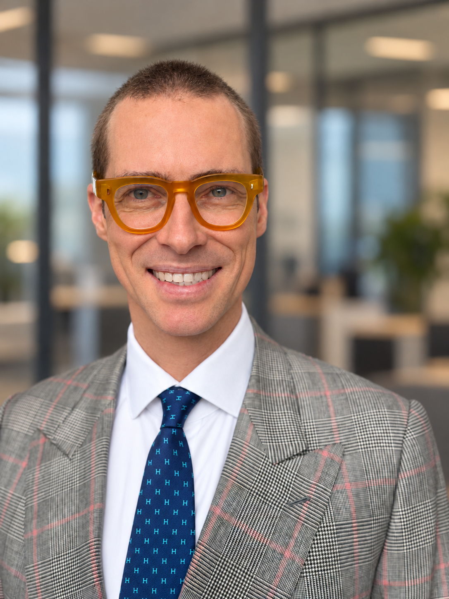
Freelance consulting
Malt connects companies with freelance specialists. View my consulting profile and propose an AI infrastructure or platform engineering assignment.
Online courses
Udemy is an online learning platform. Explore the courses I teach on AI infrastructure, with lessons you can follow at your own pace.
Multi-LLM platforms, AWS Bedrock, OpenAI, Anthropic, RAG, agentic workflows, evaluation, guardrails and observability.
NVIDIA DGX and A100, InfiniBand, WEKA, model serving, scientific computing and AI infrastructure operations.
FINMA/EY audit support, nLPD/GDPR-by-design, PII controls, SLA/KPI governance, ITIL and operational risk.
Terraform/IaC, APIs, microservices, cloud and on-premise operations, vendor governance, incident recovery and change leadership.
Public GitHub record
From infrastructure and observability to AI tooling, I contribute code fixes, compatibility improvements and documentation to the tools I use.
46 merged pull requests across 32 external repositories. The full public record includes 175 pull requests and 65 issues, with their individual statuses and links.
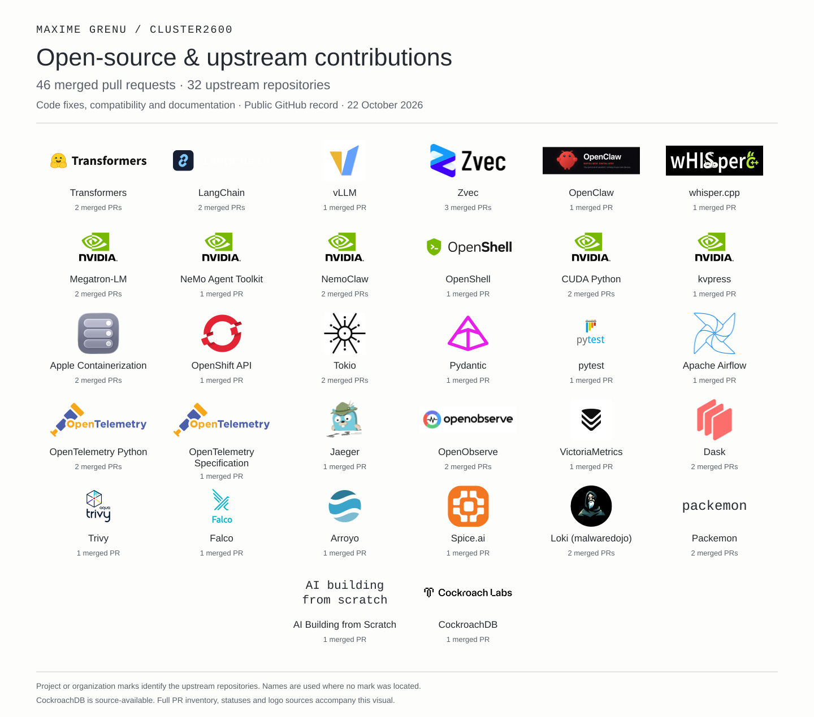
Explore contributions and merged PRsFull inventory (CSV)
Includes CockroachDB, which is source-available. Project and organization marks identify the upstream repositories.
2025 -
Licorn SA / OriginAI SA · Switzerland
Architected two production AI platforms: multi-LLM services, FastAPI microservices, NVIDIA DGX, AWS Bedrock, Terraform, PII controls and OpenTelemetry/Langfuse observability.
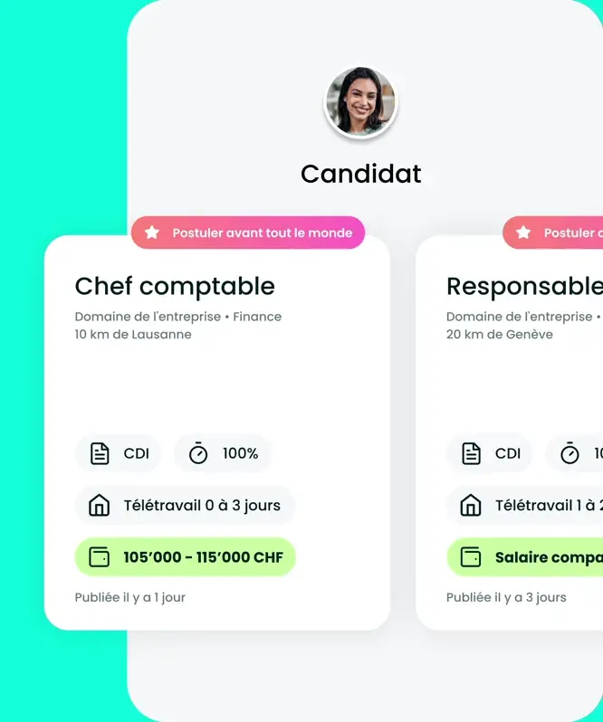
MY ENGINEERING SCOPE / 2025–2026
Multi-LLM services and FastAPI microservices
NVIDIA DGX and AWS Bedrock
Terraform infrastructure, OpenTelemetry and Langfuse observability
PII controls across the AI platforms
2023 - 2024
FlowBank · Geneva
Led infrastructure and DevOps across five data centers spanning AWS, Azure and on-premise systems. Owned a CHF 8M budget, led a 12-person team and supported recurring FINMA/EY audits.
2022 - 2023

Swiss Institute of Bioinformatics · Lausanne
Logo: SIB Swiss Institute of Bioinformatics, CC BY-NC-ND 4.0.
Led the infrastructure team supporting scientific computing with NVIDIA A100, InfiniBand and WEKA, including service governance, security and research stakeholder delivery.
2008 - 2014
AT&T Global System Hosting · Bratislava
Led 50+ engineers across 16 nationalities on a 40,000-server and 100,000-VDI estate. Led escalation and recovery work during a 160 TB SAN outage in 2013 and contributed to a 100,000-blade-server data-center design. Read the recovery story.
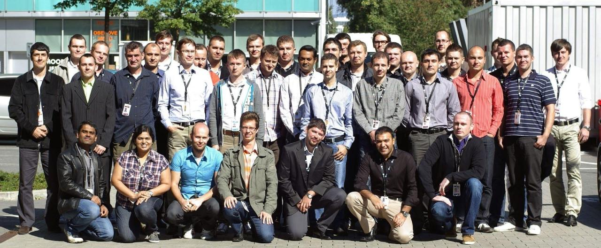
Earlier assignments
Spital Wallis
Presenting change and problem management to the hospital team.
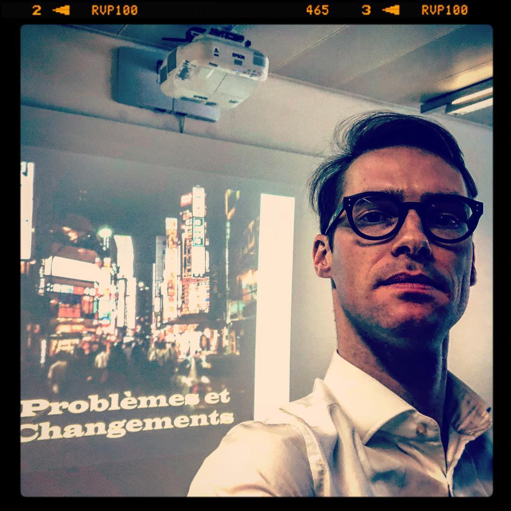
Team leader & escalation manager
On a Sunday in 2013, a 160 TB SAN failed at AT&T. It held VMware virtual disks, database volumes and Unix systems that booted directly from the SAN.
The storage used RAID 0 disk groups beneath a RAID 5 layer. The first failed disk was not replaced promptly. When a second disk failed in a different RAID 0 group, the upper RAID 5 layer lost a second member and the SAN became unavailable. Attempts to recover the array and its snapshots failed. We had to restore the systems.
I was both team leader and escalation manager. Starting Monday, I was on a continuous incident call from 8 a.m. to 6 p.m., with around 100 participants, including VIP stakeholders, while also working on the technical recovery.
In this environment, Avamar covered Windows Server 2008 R2 and newer systems. The bare-metal recovery procedure had never been tested under these conditions. When we tried to restore, I discovered that the Avamar boot ISO was missing the VMware VMXNET3 network driver.
I rebuilt the ISO with the missing driver, then trained the recovery teams: about 50 people in Bratislava, 30 in the United States and 100 in India. The other systems relied on tape backups stored across several US states, which added another recovery path to coordinate.
The recovery operation ran around the clock, from Sunday until Friday at noon, when we restored the last production server.
Later, when I deployed Avamar solutions for NTT's clients, I documented the recovery procedures, supplied them with boot ISOs containing the necessary drivers, and validated backup and restore with them. I made the restore test part of the deployment.
I also hold a rare specialist certification in Avamar implementation, earned in 2015.
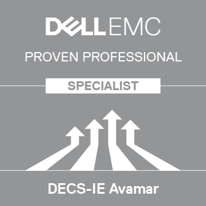
Specialist - Implementation Engineer, Avamar Version 7.0Remote delivery during COVID
I joined École hôtelière de Lausanne ten days before the COVID closure. Almost immediately, onboarding became a combination of remote collaboration, daily operations and international project delivery.
One of my responsibilities was taking over the IT infrastructure project for the new Singapore campus. I reviewed the proposed design, reassessed the wireless capacity and technology choices, and rebuilt the architecture around the campus’s requirements.
I selected Huawei equipment costing roughly one third of the hardware originally proposed, reorganised the delivery arrangements and appointed Danoffice IT as the implementation partner.
Together, we deployed the wired network, Wi-Fi, surveillance cameras, firewalls, servers and meeting-room systems. I coordinated the work from Switzerland without travelling to Singapore.
At the same time, I continued managing daily IT operations in Lausanne and supporting its campus expansion, with reduced system administration capacity.
The project brought together architecture, procurement, partner coordination and operational leadership. It also showed what a distributed team could deliver when international travel was no longer an option.
Selected badges, with links to verify each certification.
As of , I am one of 3 publicly listed NVIDIA AI Infrastructure Professional holders and one of 8 publicly listed NVIDIA Agentic AI Professional holders in Switzerland, according to Credly's public directory.
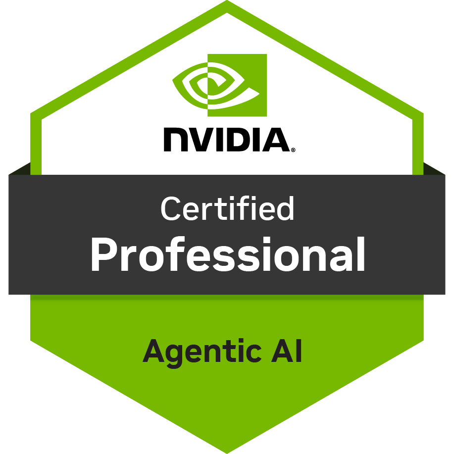
NVIDIA Certified Professional: Agentic AI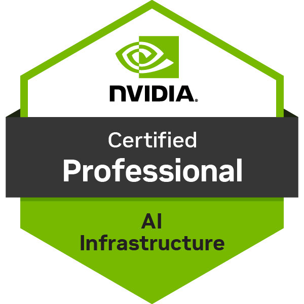
NVIDIA-Certified Professional: AI Infrastructure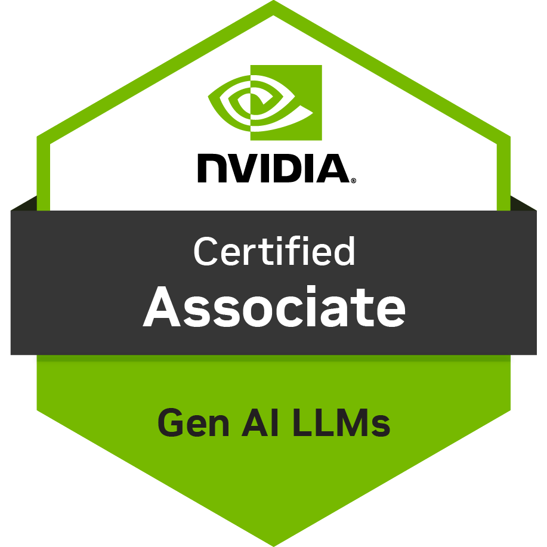
NVIDIA-Certified Associate: Generative AI LLMs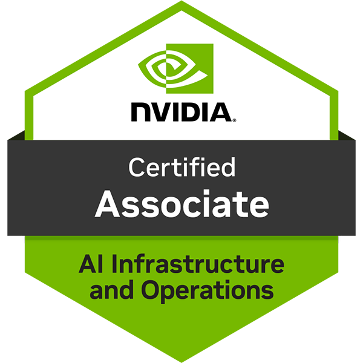
NVIDIA-Certified Associate: AI Infrastructure and Operations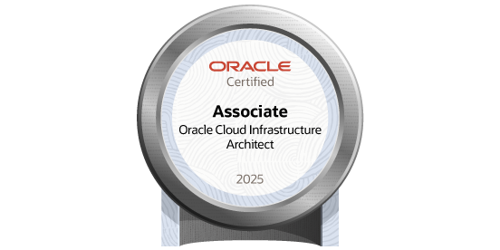
Oracle Cloud Infrastructure 2025 Certified Architect Associate Oracle Cloud Infrastructure 2025 Certified Foundations Associate
Oracle Cloud Infrastructure 2025 Certified Foundations Associate
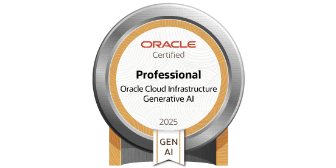
Oracle Cloud Infrastructure 2025 Certified Generative AI Professional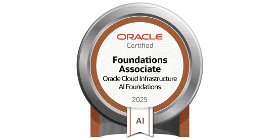
Oracle Cloud Infrastructure 2025 Certified AI Foundations Associate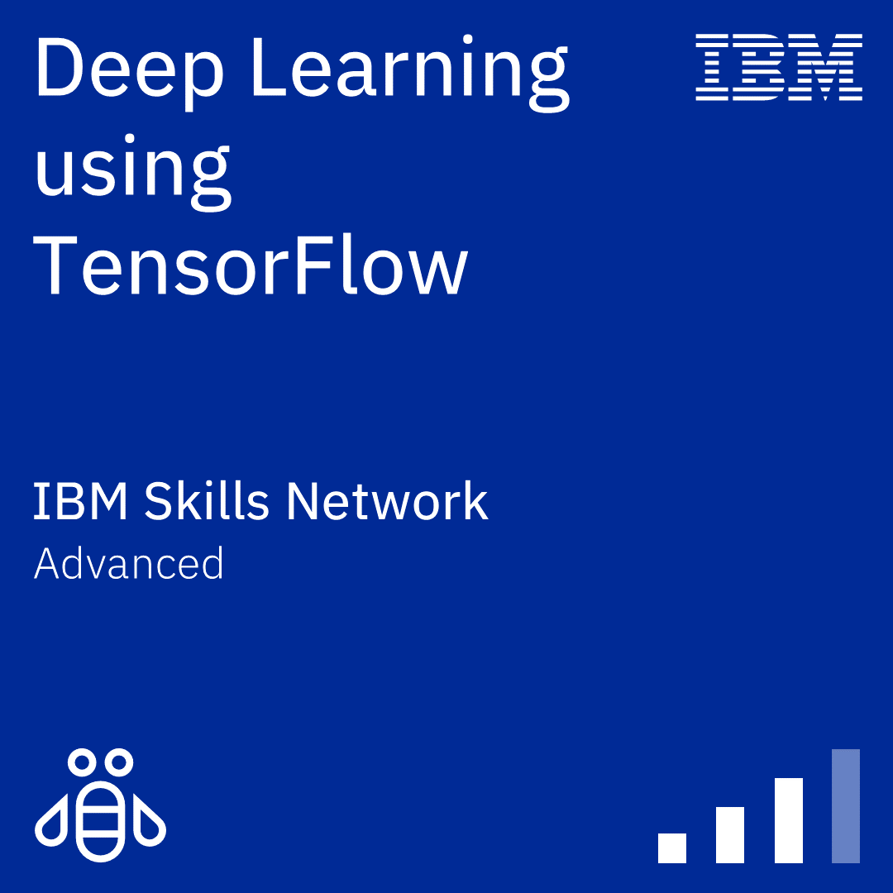
Deep Learning using TensorFlow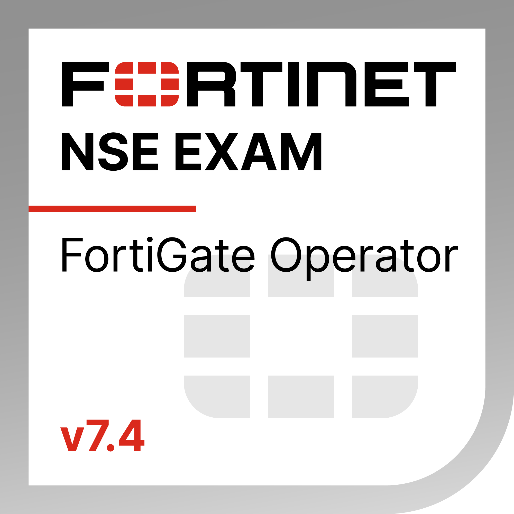
Fortinet FortiGate 7.4 OperatorBTS in Information Technology
CESI, France · Bac+2 technical diploma
Papers on AI and courses on the infrastructure behind it.
The public debate over artificial intelligence is conducted almost entirely in the vocabulary of software-benchmarks, parameters, model releases. This paper argues that the framing is mistaken. The contest for AI supremacy is an industrial contest, governed by two physical and human constraints that no algorithm can relax: electrical power and trained minds. Read through this lens, the present strategic picture is stark. China is building the inputs-approving roughly ten nuclear reactors in each of four consecutive years, holding the world's largest fleet under construction, and now producing close to half of the planet's elite AI researchers domestically. The United States is buying the inputs-constructing data centres at scale and importing talent through compensation packages that have reached, in one reported case, the better part of a billion dollars per individual: momentum that is real but rented. Europe is doing neither. A survey of the wider field-the Gulf, India, East Asia, and the Global South-finds the same logic everywhere: the serious builders couple energy to compute, and Europe appears on none of these maps. The paper develops this constraint-based account drawing on Smil, Perez, and Mazzucato; reframes the recurring "data centres consume too much water" narrative-and the live 2026 controversy over whether that narrative is foreign-financed-as a distraction variable; and closes with a normative proposal for a credible European response. The central claim is uncomfortable: the next decade of AI will be won by whoever keeps the lights on and grows the people-and on present trajectory, that is not Europe.
The convergence of artificial intelligence and mass-produced robotics is eliminating human labour as the primary engine of economic value. This paper argues that this displacement is structural and irreversible, and that the appropriate response is not mitigation but redesign — of economic systems, governance architectures, and the social contract itself.
Drawing on thinkers from Keynes and Aristotle to Masuda, Harari, and Ishiguro, the paper develops a three-part proposal. First, a resource-based economy in which the Earth's materials are managed as a common inheritance, extracted by autonomous systems, and distributed for the benefit of all. Second, a governance model replacing executive state apparatus with a small, lottery-selected human Council charged with custodianship of civilisational values, operating in partnership with AI systems conceived as Extended Intelligence rather than autonomous authority. Third, a fiscal architecture replacing all existing taxes with a single transaction levy financing a universal base income.
The paper further argues that extraterrestrial resource extraction is a necessary long-term extension of this model, and that the central challenge of the post-labour world is not material — it is philosophical: how human beings construct meaning when necessity no longer structures their lives.
Courses taught by me
Udemy is a platform for online courses. Visit my instructor profile to browse my courses and learn at your own pace.